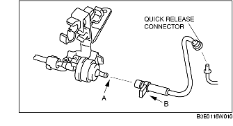

PURGE SOLENOID VALVE REMOVAL/INSTALLATION [LF]
B3E011618740W01
1. Remove the plug hole plate.
2. Remove the battery cover. (See BATTERY REMOVAL/INSTALLATION [LF].)
3. Disconnect the negative battery cable.
4. Remove using the following procedure:
-
Caution
-
• Do not disconnect the purge solenoid valve and evaporative hose except when replacing the purge solenoid valve because it may cause evaporative gas leakage. When it is necessary to remove the purge solenoid valve for removing/installing other parts, disconnect the valve at the quick release connector.
-
(1) Disconnect the evaporative hose at the charcoal canister side. (See Evaporative Hose Installation Note.)

-
(2) Pull the vacuum tube from the intake manifold.

5. Install in the reverse order of removal.
Evaporative Hose Installation Note
1. Install the evaporative hose and clamp as shown in the figure.